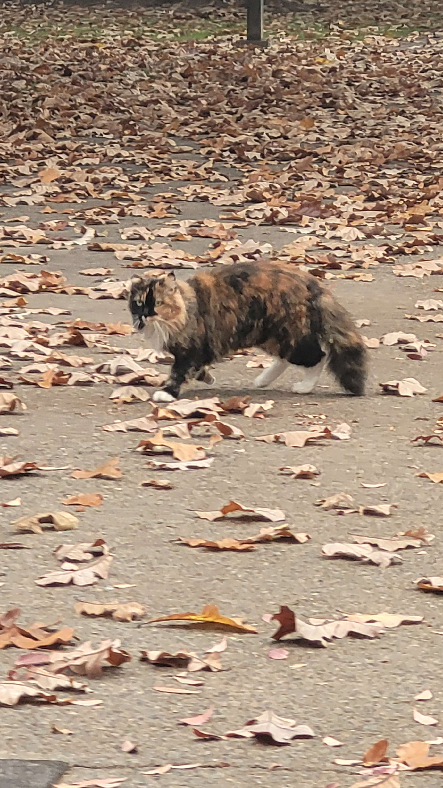
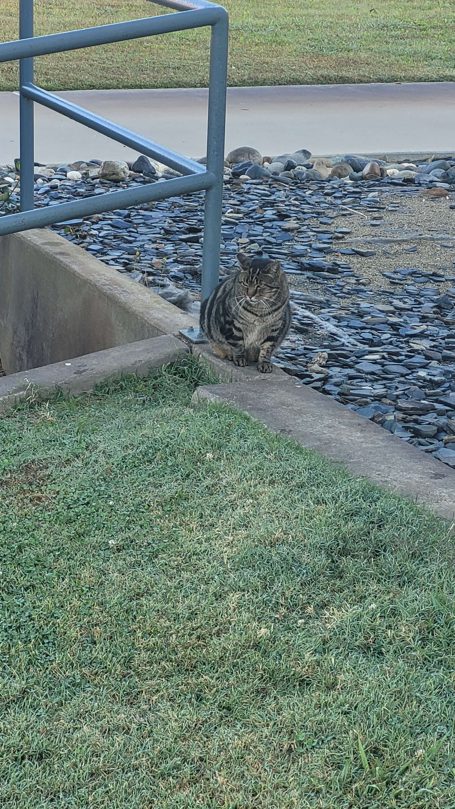

On the Yuba College Campus, there are several colonies of cats that live there. Within Yuba College, there is a program called "Campus Cats of Yuba College". This program is volunteer run and funded, and dedicates themselves to the goal of both feeding and spay/neutering the cats on campus. The program works with the veterinary technology program at Yuba College, allowing the cats to be spayed/neutered, and for the students to see this happen and get some hands-on experience. The cats are mostly feral, but a select few are friendly enough to allow themselves to be pet. (specifically Stumpy, he's a sweetheart)
 